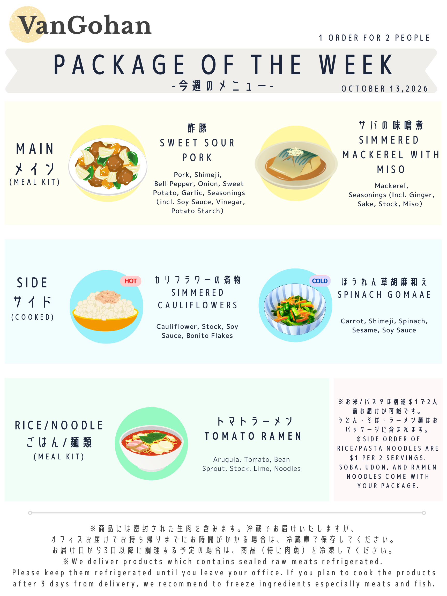

VanGohan Recipe: Week of 2026-10-12
サバの味噌煮
- Ingredients are marked with Blue Stickers 🥣
- Cooking time: 20-35mins
ご自宅でご用意いただくもの
インストラクション
- Seasoning①、生姜と水150mlを中火にかけ、沸いたらさばの皮目を上にしていれる
酢豚
- Ingredients are marked with Orange Stickers 🥣
- Cooking time: 20-35mins
ご自宅でご用意いただくもの
トマトラーメン
- Ingredients are marked with Yellow stickers 🥣
- Cooking time: 10-15mins
ご自宅でご用意いただくもの
インストラクション
- たっぷりのお湯で麺を6分茹でて湯を切る
- Soup②に300mlの水を入れ煮たたせる
- お椀にもりつけ、野菜をのせる
- バジル・パクチー・黒胡椒・オリーブオイル・ごま油・粉チーズなどをお好みでプラスしてお楽しみください。
